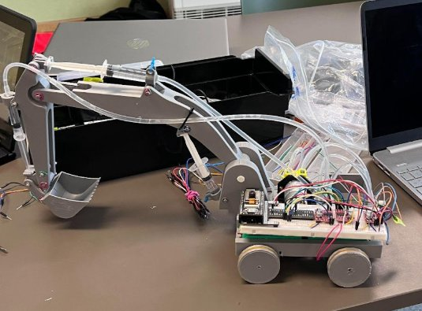

What It Does
This project is a functional miniature excavator driven by tank-style Bluetooth steering and hydraulic arm actuation. Peristaltic pumps push fluid through syringe-based joints to raise, lower, and extend the excavator arm. The entire system is controlled wirelessly from a smartphone via the Dabble app connected to an ESP32.
The project was designed as a replicable STEM education kit — demonstrating hydraulics, motor control, embedded programming, and 3D design in a single build.

The Problem
Most off-the-shelf STEM kits treat hydraulics and electronics as separate modules. The goal here was to integrate both into one coherent system: a robot that physically demonstrates how hydraulic pressure translates into mechanical movement, while being controlled by a real microcontroller over Bluetooth. The functional target was lifting a 100g load to a height of at least 5cm.
Design Approach
The design was built around readily available, low-cost components that a student could source and replicate. Key decisions:
ESP32 MCU
Built-in Bluetooth eliminates the need for a separate module. Programmed in Arduino IDE.
Syringe Hydraulics
5mL and 3mL syringes form push-pull hydraulic joints. Peristaltic pumps drive fluid flow without contact.
N20 Geared Motors
200 RPM N20 motors provide enough torque for tank steering on the 3D-printed chassis.
Dabble App Control
Bluetooth gamepad interface via the free Dabble mobile app — no custom app needed.
Technical Implementation
Drive system: Two N20 200RPM motors controlled through MX1508 dual H-bridge drivers provide differential (tank) steering. Motor direction is mapped to the Dabble gamepad D-pad inputs.
Hydraulic actuation: Three peristaltic pumps independently control the boom, arm, and bucket joints. Each pump pushes fluid into the corresponding syringe pair — one syringe extends, the other retracts — creating a push-pull hydraulic mechanism without a reservoir or valves.
Power: LiFePO₄ 32650 cells provide stable voltage across the load range of the pumps and motors — chosen for their flat discharge curve and safety characteristics.
| Microcontroller | ESP32 (Bluetooth built-in) |
| Motor Driver | MX1508 dual H-bridge |
| Drive Motors | 2× N20 200RPM geared motors |
| Hydraulic Actuators | 3× Peristaltic pumps + 5mL/3mL syringes |
| Control Interface | Dabble app via Bluetooth |
| Battery | LiFePO₄ 32650 cells |
| Chassis | PLA 3D printed |
Hydraulic logic: Each joint is controlled by a dedicated pump. Pressing a button forward runs the pump in one direction (extend), pressing back reverses it (retract). No valves or reservoirs — the peristaltic pump holds pressure passively when off.
Testing & Results
The excavator exceeded its lift height target by 40%. Initial syringe slippage under load was resolved by permanently mounting syringes with adhesive, eliminating the most critical failure mode. Tank steering was functional across flat surfaces with consistent Bluetooth response.
Challenges & Iteration
Syringe Backflow & Slippage
Syringes slipped under hydraulic pressure, causing inconsistent arm movement. Fixed with permanent adhesive mounting to the chassis frame.
Wheel Dimension Inaccuracy
3D-printed wheels came out slightly undersized after shrinkage, causing shaft slop. Compensated by adjusting tolerances in the CAD model for reprints.
Water Leakage at Connections
Fluid leaked at tubing joints under pump pressure. Resolved by using tighter-fitting tubing and applying silicone sealant at connection points.
Traction on Smooth Surfaces
Wheels lacked grip on smooth surfaces. Added rubber bands around the wheel circumference as a low-cost traction solution.
Future Improvements
FPV Camera
Stream live video from the ESP32-CAM module for first-person remote operation.
Tighter Wheel Shafts
Redesign shaft tolerances in CAD to account for print shrinkage and eliminate play.
Sealed Hydraulic System
Replace open tubing joints with a fully sealed hydraulic circuit to eliminate leakage under sustained pressure.
Chassis Refinement
Improve structural rigidity and aesthetics with a revised shell design and metal reinforcement at stress points.